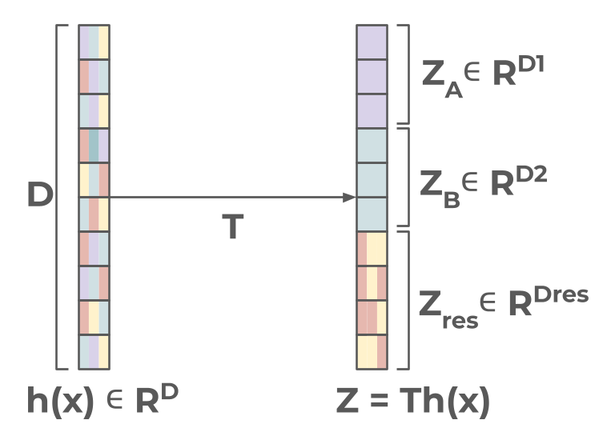
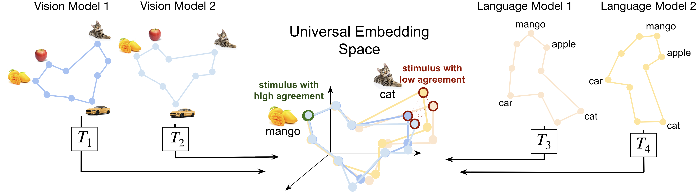

Shreya Saha

I am a PhD student at UCSD working with Prof. Meenakshi Khosla. My research sits at the intersection of machine learning and neuroscience, focusing on how information is represented across cortical areas of the human brain and how artificial neural networks can model these processes. I take a two-way approach: drawing inspiration from brain function to guide new computational methods, and using artificial models to probe the brain's own mechanisms. I'm also interested in how diverse artificial systems encode information, how these representations parallel those in animal brains, and in developing a unified framework that embeds biological and artificial representations in a shared space.
Outside the lab, I enjoy hiking, climbing, and swimming. Feel free to reach out if my work resonates with you or if you're interested in collaborating.
News
- April 2026 One abstract on Human Language System Modeling using DNNs got accepted as an oral at REalign, ICLR 2026.
- March 2026 One abstract on Human Language System Modeling using DNNs got accepted into COSYNE 2026.
- December 2025 Our paper on measuring the discriminative capacity of various representational similarity metrics got accepted into the Unireps 2025 workshop, held at NeurIPS in San Diego.
- August 2025 One paper on Human Visual System Modeling using DNNs got accepted into the Cognitive Computational Neuroscience Conference 2025.
- Jan 2024 Started as a PhD student at the NeuroML Lab at UC San Diego with Dr. Meenakshi Khosla.
Selected Publications
full list →
By learning information-preserving latent spaces, we uncover functional modularity hidden within neural network representations.

A universal embedding framework that brings together representations from different networks into a single common space using shape analysis and optimal-transport theory.

Information encoded in the human language cortex can be modeled from diverse representational sources that differ substantially from the original linguistic stimulus in both form and modality.

A Similarity Network Fusion based framework that integrates diverse representational metrics to reveal how architecture and training jointly shape vision models' computational strategies beyond superficial design categories.

A comparison of response-optimized and task-optimized vision and language model encoders across different readout mechanisms for predicting visual cortical responses.